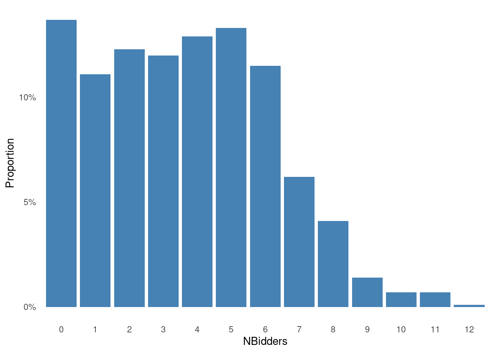
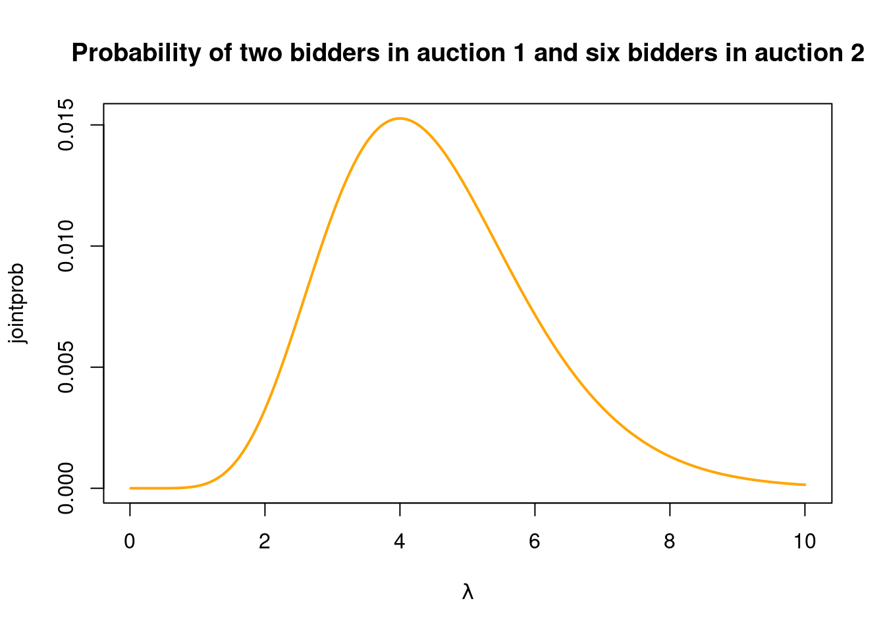
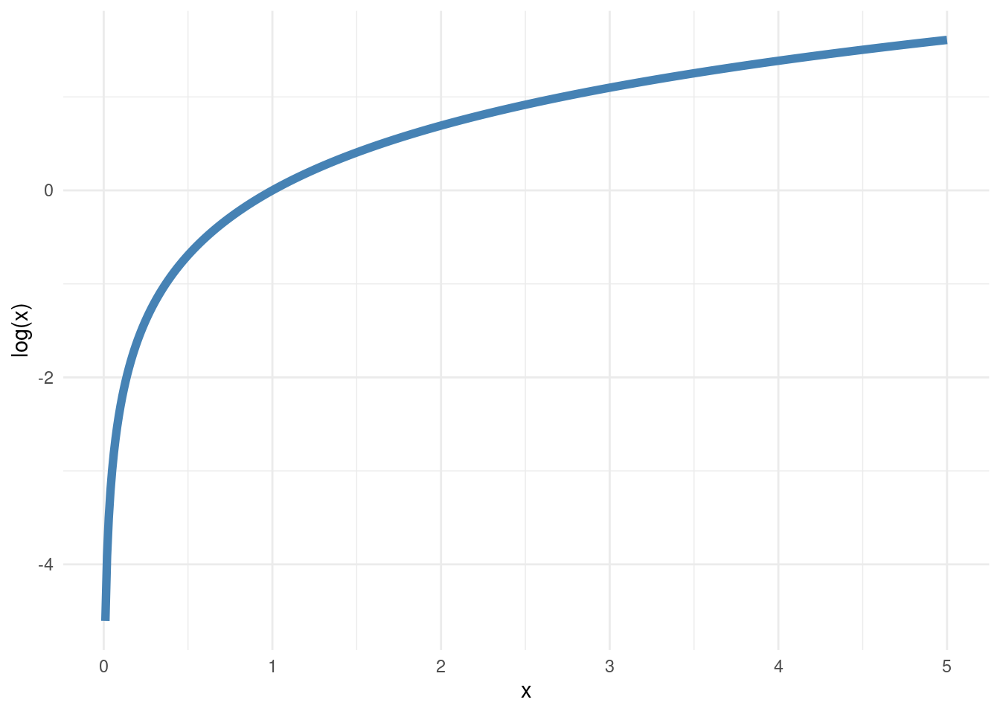
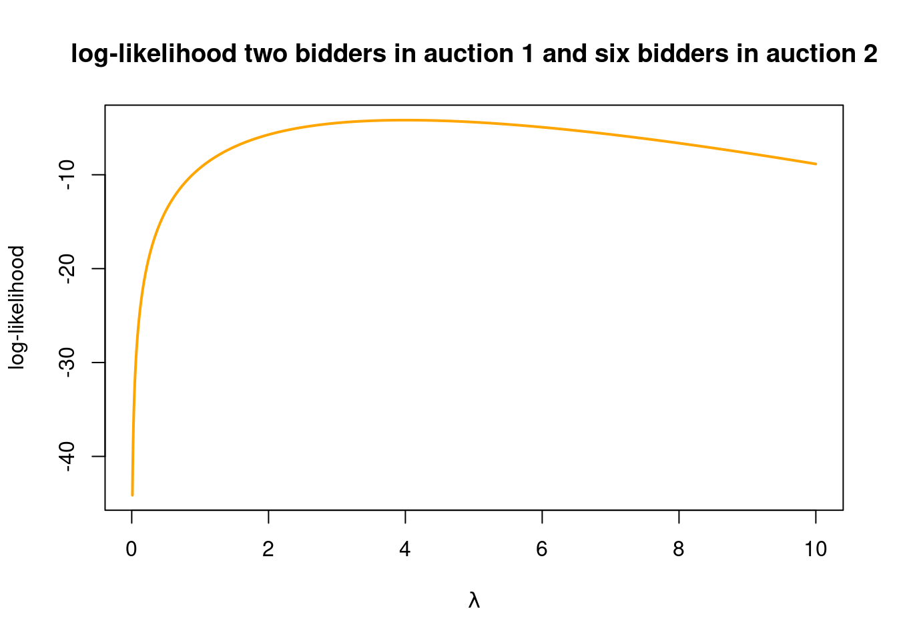
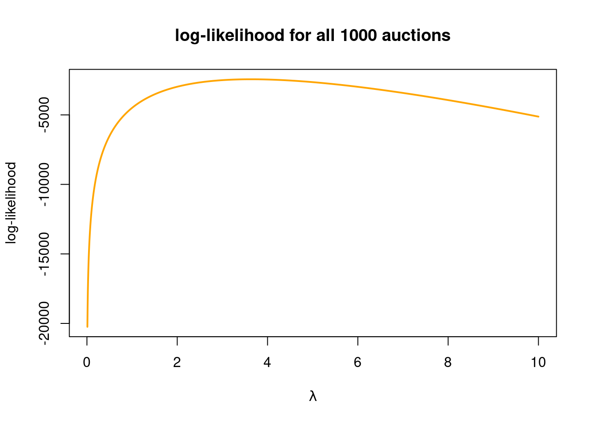
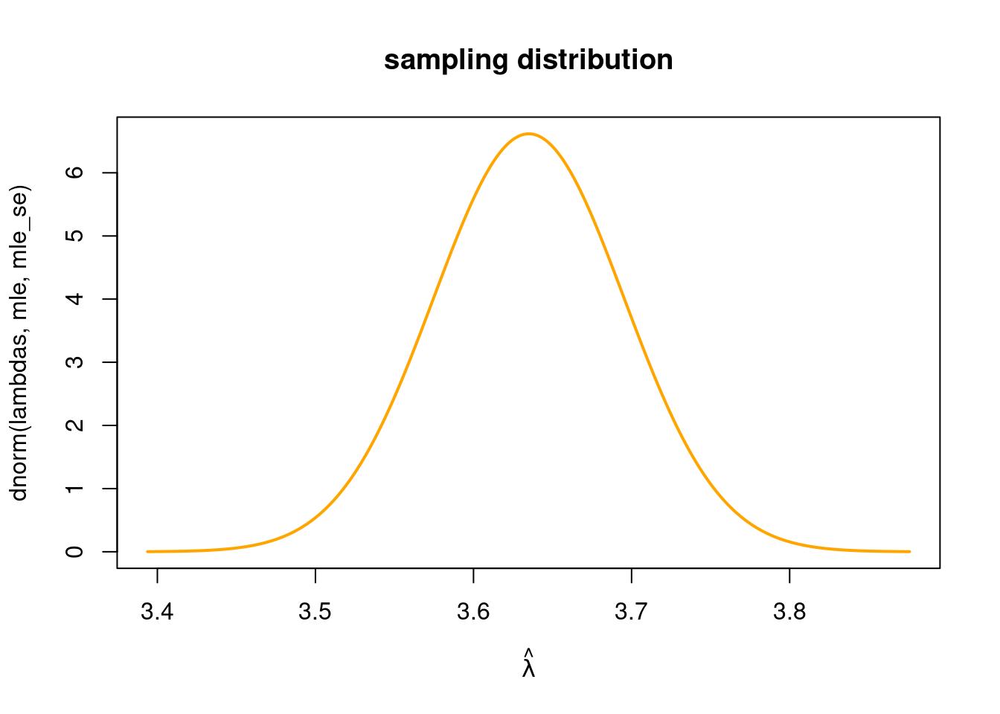

library(latex2exp) # for plotting mathematical symbols (LaTeX)
library(remotes) # for loading packages from GitHub
library(ggplot2) # for fancy plotting
library(mvtnorm) # the multivariate normal distributionMaximum likelihood by numerical optimization
Introduction
In this tutorial you will learn how maximum likelihood estimates and standard errors can be computed by numerical optimization routines in R. We learn about a general way to compute a normal approximation of the sampling distribution of the maximum likelihood estimator, which can be proved to be accurate in large samples, but is typically surprisingly accurate also for smaller sample sizes.
It will take some work to get to the end of the document, but by the end of it you will have learned invaluable tools for a statistician/data scientist/machine learner giving you the super-power 💪 to use the computer to estimate the parameters and their uncertainty in quite complex models.
We will start with simple models with a single parameter to cover all the concepts, and then move on to the practically more important multi-parameter case.
Let’s first load some useful libraries (install them using install.packages() if you haven’t already).
Data
We will use the dataset ebaycoins in the R package SUdatasets for illustration. The dataset contains data from 1000 eBay auctions of collector’s coins1. Let’s load the dataset and have a look:
#install_github("StatisticsSU/SUdatasets") # uncomment if this is not installed
library("SUdatasets")
head(ebaycoins) BookVal MinorBlem MajorBlem PowerSeller IDSeller Sealed NegFeedback
1 18.95 0 0 0 0 0 0
2 43.50 0 0 1 0 0 0
3 24.50 0 0 1 0 0 0
4 34.50 1 0 0 0 0 0
5 99.50 0 0 0 0 0 1
6 9.50 0 0 0 0 0 0
ReservePriceFrac NBidders FinalPrice
1 0.3688654 2 15.50
2 0.2298851 6 41.00
3 1.0200000 1 24.99
4 0.7217391 1 24.90
5 0.1672362 4 72.65
6 1.2094737 2 17.52Each auction (rows in the dataset) will be taken as an observation, and the dataset has the following variables:
the number of bidders in each auction (
NBidders)the final price (
FinalPrice)the book value of the coin according to a coin collector catalogue (
BookVal).the seller’s reservation price (lowest price that the seller is willing to sell for) as a fraction the book value (
ReservePriceFrac).binary variables on whether or not the seller is a verified ebay seller (
IDSeller), sells large quantites (PowerSeller) and if the seller has many reviews with negative feedback (NegFeedback)binary variables with information about the condition of the object: if it has a minor blemish (
MinorBlem), a major one (MajorBlem), or sold in its original unbroken packaging (Sealed).
We will intially analyze only the variable NBidders , the number of bidders in each auction. A histogram of the data are plotted below.
Show the code
df = data.frame(prop.table(table(ebaycoins$NBidders)))
names(df) <- c("NBidders", "Proportions")
ggplot(df, aes(x = NBidders, y = Proportions)) +
geom_bar(stat = "identity", fill = "steelblue") +
scale_y_continuous(labels = scales::percent) +
labs(
x = "NBidders",
y = "Proportion"
) +
theme_minimal() + # Use a minimal theme
theme(
panel.grid.major = element_blank(), # Remove major gridlines
panel.grid.minor = element_blank() # Remove minor gridlines
)
The likelihood function and maximum likelihood for the Poisson model
Since NBidders is a count variable, a natural first model to consider is the Poisson model:
\[ Y_1,\ldots,Y_n \vert \lambda \overset{\mathrm{iid}}{\sim}\mathrm{Poisson}(\lambda) \]
where we use the symbol \(Y\) for the random variable NBidders and \(y\) as the observed value. The Poisson has one particularly noteworthy property: the parameter \(\lambda\) is both the mean and the variance, i.e. if \(X\sim\mathrm{Poisson}(\lambda)\), then \(E(X)=V(X)=\lambda\). This makes the Poisson model suitable for count data where the mean and variance are approximately equal, which is not true for all datasets.
Interactive exploration
You can get to know the Poisson distribution \(P(X=x)\) by changing its parameter \(\lambda\) with the slider below. Hover over the bars in the plot if you want to see the exact probabilities. The darker shaded bars represent the distribution function, i.e. probabilities of the form \(P(X\leq x)\).
We can estimate \(\lambda\) by the maximum likelihood (ML) metod. The ML method finds the value for \(\lambda\) in the Poisson distribution that maximizes the probability of the observed dataset \(y_1,\ldots,y_n\).
Probability of the observed data - only the first auction
To break this down, let us start with the probability of observing the number of bidders in the first auction \(y_1\) (which was Nbidders = 2, see the dataset above). Assuming a Poisson distribution, this probability is given by the formula (where \(y_1\) is the observed number of bidders in the first auction): \[
P(y_1 \vert \lambda) = \frac{\lambda^{y_1}e^{-\lambda}}{y_1!}
\]
where \(n!=n(n-1)(n-2)\cdot 2 \cdot 1\) is the usual factorial and \(P(y_1 \vert \lambda)=\mathrm{Pr}(Y_1=y_1 \vert \lambda)\). Now, assume that \(\lambda = 3\). The probability of observing the number of bidders in the first auction (Nbidders = 2) is then \[
P(y_1 = 2 \vert \lambda = 3) = \frac{3^{2}e^{-3}}{2!} = 0.2240418
\] We can let R do this calculation for us using the dpois function
dpois(x = 2, lambda = 3)[1] 0.2240418If we instead had \(\lambda = 2\), this probability changes to
dpois(x = 2, lambda = 2)[1] 0.2706706This is higher, so \(\lambda = 2\) agrees better with observing Nbidders = 2 in the first auction.
Probability of the observed data - first two auctions
What if we look at the first two auctions where we have observed \(y_1 = 2\) and \(y_2 = 6\). What is the joint probability of observing \(y_1 = 2\) and \(y_2 = 6\) when \(\lambda = 2\)? If we assume that the number of bidders in the different auctions are independent, then we known that this probability is the product of the individual probabilities: \[ P(y_1 = 2,y_2 = 6 \vert \lambda = 2)= P(y_1 = 2 \vert \lambda = 2)P(y_2 = 6 \vert \lambda = 2) = \frac{2^{2}e^{-2}}{2!} \frac{2^{6}e^{-2}}{6!} \] Rather than pulling out our calculators, let R do the work for us
dpois(x = 2, lambda = 2)*dpois(x = 6, lambda = 2)[1] 0.003256114This probability is of course lower than the probability of only observing the first auction (the probability of an intersection \(A \cap B\) is always smaller or equal to the probability of each event \(A\) and \(B\); think Venn diagram), but it is the relative probabilities for different \(\lambda\) that interests us2. For example, the probability of observing \(y_1 = 2\) and \(y_2 = 6\) when \(\lambda = 3\) is
dpois(x = 2, lambda = 3)*dpois(x = 6, lambda = 3)[1] 0.01129381which is more than three times larger than when \(\lambda=2\). So when we added another observation \(y_2 = 6\), the data started to ‘prefer’ a higher \(\lambda\). The reason is that \(y_2 = 6\) is a rather high count that is more likely to be observed if \(\lambda = 3\) than if \(\lambda = 2\) (remember \(\lambda\) is the mean of the Poisson distribution). Now is a good time to go back to the Poisson distribution widget above, change the slider from \(\lambda = 2\) to \(\lambda = 3\) and look at how the probabilities of \(Y=2\) and \(Y=6\) change.
But what is the optimal \(\lambda\) for these two observations, i.e. which value of \(\lambda\) gives the highest joint probability for the observed \(y_1 = 2\) and \(y_2 = 6\)? We can explore this by plotting the joint probability \(P(y_1 = 2,y_2 = 6 \vert \lambda)\) as a function of \(\lambda\). We need to compute this probability for a range of \(\lambda\) values in a for loop:
nlambdas = 2000
lambdas = seq(0.01, 10, length = nlambdas)
jointprob = rep(NA, length(nlambdas))
for (i in 1:nlambdas){
jointprob[i] = dpois(x = 2, lambda=lambdas[i])*dpois(x = 6,lambda=lambdas[i])
}
plot(lambdas, jointprob, type = "l", col = "orange", lwd = 2,
xlab = TeX(r'($\lambda$)'),
main = "Probability of two bidders in auction 1 and six bidders in auction 2")
Very nice! We can see that \(\lambda = 4\) gives the highest probability to the observed number of bidders in the first two auctions. The function plotted above is called the likelihood function (for the first two observations).
Probability of the observed data - all auctions
It is now easy to see that the likelihood function for all \(n=1000\) auctions is obtained by multiplying the Poisson probabilities for all \(n=1000\) auctions:
\[ P(y_1,y_2,\ldots,y_n \vert \lambda)=\prod_{i=1}^n P(y_i \vert \lambda) \]
where \(P(y_i \vert \lambda)\) is the Poisson probability for observing \(y_i\) bidders in auction \(i\) in the dataset, if the parameter has the value \(\lambda\). You should note that the likelihood function is the probability of the observed data viewed as a function of the parameter (like we did with the orange line above). The data observations are observed and fixed (hence the lower case letters \(y_1,y_2,\ldots,y_n\)) and the likelihood function explores how the joint probability of the observed data varies as we change \(\lambda\).
The maximum likelihood (ML) method for parameter estimation sets the parameter \(\lambda\) to the value that maximizes the probability of observed data, i.e. the \(\lambda\) that maximizes the likelihood function. This method can be used in in any probability model, not just the Poisson model. Knowing the ML method gives you superpowers! 💪
- This model is too complex, it is impossible to estimate its parameters!
- ML: hold my beer.
When we start to multiply the probabilities for all data points, the joint probability becomes tiny, and we run into numerical problems. We there often choose to plot and maximize the logarithm of the likelihood, the so called log-likelihood function
\[ l(\lambda)=\log P(y_1,y_2,\ldots,y_n \vert \lambda)=\sum_{i=1}^n \log P(y_i \vert \lambda) \]

I have given the log-likelihood a symbol \(l(\lambda)\) to really make it clear that we want to view this as a function of the parameter \(\lambda\). This function does also depend on the observed data \(y_1,y_2,\ldots,y_n\), but this is not written out explicitly in the symbol \(l(\lambda)\), to reduce the clutter. Since the logarithm is a monotonically increasing function (see plot in margin), it does not matter if we maximize the likelihood or the log-likelihood. We get exactly the same estimate of \(\lambda\). And logarithms are also often more easy to deal with mathematically. Let’s verify that we find the same maximum if we plot the log-likelihood function for the first two auctions (note how I use the log=TRUE argument in dpois to get the log of the Poisson probabilities, which I now add):
nlambdas = 2000
lambdas = seq(0.01, 10, length = nlambdas)
loglik = rep(NA, length(nlambdas))
for (i in 1:nlambdas){
loglik[i] = dpois(x = 2, lambda = lambdas[i], log = TRUE) +
dpois(x = 6, lambda = lambdas[i], log = TRUE)
}
plot(lambdas, loglik, type = "l", col = "orange", lwd = 2, ylab = "log-likelihood",
xlab = TeX(r'($\lambda$)'),
main = "log-likelihood two bidders in auction 1 and six bidders in auction 2")
We are now ready to plot the log-likelihood function based on all \(n=1000\) observations (auctions). It seems like a real mess to add terms like dpois(x = 6, lambda = lambdas[i], log = TRUE) for each of the 1000 observations. One solution is to use a for loop, but we can do even better (loops are slow in R). The dpois function is vectorized, meaning that it can compute the probabilties for all observations in one go. Let’s try it for the first two auctions and \(\lambda = 2\):
# first one observation at the time. first obs:
dpois(x = 2, lambda = 2)[1] 0.2706706# seconds obs
dpois(x = 6, lambda = 2)[1] 0.0120298# and now using that dpois accepts a vector c(2,6) as first argument
dpois(x = c(2,6), lambda = 2)[1] 0.2706706 0.0120298Note how the call dpois(x = c(2,6), lambda = 2) returns a vector where each element is a probability for the corresponding observation. This also works with the log = TRUE argument
dpois(x = c(2,6), lambda = 2, log = TRUE)[1] -1.306853 -4.420368so we can obtain the log-likelihood for all \(n=1000\) observations by just summing this vector:
loglik_vect = dpois(x = ebaycoins$NBidders, lambda = 2, log = TRUE)
sum(loglik_vect)[1] -2974.806Sweet! So now we can compute the log-likelihood for all the data over a grid of lambda-values:
nlambdas = 2000
lambdas = seq(0.01, 10, length = nlambdas)
loglik = rep(NA, length(nlambdas))
for (i in 1:nlambdas){
loglik[i] = sum(dpois(x = ebaycoins$NBidders, lambda = lambdas[i], log = TRUE))
}An alternative (faster) way of computing the log-likelihood function that avoids the for-loop is by using the sapply function in R. We first define a function that compute the log-likelihood for any given lambda and input and then let sapply evaluate that function over a vector of lambda-values:
loglikfunc <- function(lambda){
sum(dpois(x = ebaycoins$NBidders, lambda, log = TRUE))
}
nlambdas = 2000
lambdas = seq(0.01, 10, length = nlambdas)
loglik = sapply(lambdas, loglikfunc)Ok, let’s now plot the log-likelihood function:
plot(lambdas, loglik, type = "l", col = "orange", lwd = 2, ylab = "log-likelihood",
xlab = TeX(r'($\lambda$)'), main = "log-likelihood for all 1000 auctions")
It is a little tricky to read of which \(\lambda\) value gives the maximum log-likelihood, but we can look for the maximal log-likelihood among the 2000 \(\lambda\) values that we used to compute the function values in the graph:
lambdas[which.max(loglik)] # which.max finds the position of loglik with the max[1] 3.633187which should be really close to the true maximum likelihood estimate.
Interactive exploration
The interactive graph below lets you explore how different \(\lambda\) values give a different fit to the data (the model fit is the orange line in the left graph, which ideally should match the histogram of the data). The graph to the right shows the log-likelihood function. The orange dot marks out the log-likelihood value for the \(\lambda\) value chosen with the slider. By clicking the checkbox you will see the fit based on the ML estimate. Note that the Poisson model is a bad fit to this data, even with the ML estimate. We will improve on this later on when we turn to Poisson regression models.
Ok, but do we really need to compute the log-likelihood function for a bunch of \(\lambda\) values to determine where the maximum is? Fortunately no, and there are two smarter ways of getting the ML estimate:
Use methods from mathematical analysis to obtain the ML estimator as a nice little formula.
Use numerical maximization in R to let the computer find the ML estimate for us.
Option 1 is nice (once the maths is done 🥵) but is usually only possible in simpler models.
Option 2 unlocks your superpowers to easily find the ML estimate in essentially any model you like. 😍
Derivation of the ML estimator and its standard error
But let’s torture ourselves a bit and derive the ML estimator for the Poisson model mathematically. Here we go.
We need to start with writing out the log-likelihood function
\[l(\lambda) = \log P(y_1,y_2,\ldots,y_n \vert \lambda) = \sum_{i=1}^n \log P(y_i \vert \lambda)\]
for the Poisson model. In the case where the data comes from a Poisson distribution, the probability function for one observation is given by \[P(y) = \frac{e^{-\lambda}\lambda^y}{y!}\] Therefore,
\[\log P(y) = -\lambda + y\log\lambda - \log y!,\] so the log-likelihood is a sum of these terms, one for each observation:
\[l(\lambda) = \sum_{i=1}^n\left(-\lambda + y_i\log\lambda - \log(y_i !)\right) = -n\lambda + \log\lambda \sum_{i=1}^n y_i - \sum_{i=1}^n \log(y_i !)\]
We know from calculus that the maximum of a function \(f(x)\) is found by setting its first derivative \(f'(x)\) to zero and solving for \(x\). The first derivative is simply:
\[l'(\lambda) = \frac{d}{d\lambda}l(\lambda) = -n + \frac{\sum_{i=1}^n y_i}{\lambda} = 0\]
which gives the solution \[\lambda = \frac{\sum_{i=1}^n y_i}{n} = \bar y.\]
To verify that this is indeed a maximum, we can check that the second derivative is negative at \(\lambda = \bar y\). The second derivative is
\[l''(\lambda)=\frac{d^2}{d\lambda^2}l(\lambda) = - \frac{\sum_{i=1}^n y_i}{\lambda^2},\]
which is negative for all \(\lambda\) because both the data and \(\lambda\) must be positive.
Thus, the maximum likelihood estimate for the parameter \(\lambda\) in the Poisson model is simply the mean, given by \(\hat\lambda = \bar y\). 🥳
Let’s check if the formula gives the same result as we obtained by plotting:
mean(ebaycoins$NBidders)[1] 3.635Yup, checks out.
A nice thing with having a formula for the estimator is that we can then try to compute how much the estimator can vary from sample to sample, i.e. computing the standard deviation of the sampling distribution of \(\hat\lambda = \bar Y\). Note here that we use a capital letter \(\bar Y\) since we are now considering the data as random variables \(Y_1,Y_2,\ldots,Y_n\), before even observing a given sample \(y_1,y_2,\ldots,y_n\). Let us first derive the mean of the ML estimator
Remember that for a random variable \(X\) we have
\[ \mathrm{E}(aX)=a\mathrm{E}(X)\\ \] and for any random variables \(X_1,X_2,\ldots,X_n\) (independent or dependent) we have
\[ \mathrm{E}(\sum_{i=1}^n X_i) = \sum_{i=1}^n\mathrm{E}(X_i) \]
\[ \mathrm{E}(\hat\lambda)=\mathrm{E}(\bar Y)=\mathrm{E}\Bigg(\frac{\sum_{i=1}^n Y_i}{n}\Bigg)=\frac{1}{n}\Big(\sum_{i=1}^n \mathrm{E}( Y_i)\Big)=\frac{1}{n}\Big(\sum_{i=1}^n \lambda\Big)=\frac{1}{n}n\lambda=\lambda \]
where we have used that \(\mathrm{E}(\mathrm{Y})=\lambda\) for a Poisson variable. This shows that the ML estimator is unbiased (which is not always true for ML estimators, except in large samples). The variance of the sampling distribution is: \[ \mathrm{Var}(\hat\lambda) = \mathrm{Var}(\bar Y) = \mathrm{Var}\Bigg(\frac{\sum_{i=1}^n Y_i}{n}\Bigg) = \frac{1}{n^2}\mathrm{Var}\big(\sum_{i=1}^nY_i\big) = \frac{1}{n^2}n\mathrm{Var}\big(Y_i\big) = \frac{\lambda}{n} \] where the last equality uses that the variance of a \(\mathrm{Pois}(\lambda)\) variable is \(\lambda\) (remember for Poisson both the mean and variance are \(\lambda\)).
Remember that for a random variable \(X\) we have
\[ \mathrm{Var}(aX)=a^2\mathrm{Var}(X)\\ \] and for independent random variables \(X_1,X_2,\ldots,X_n\) we have \[ \mathrm{Var}(\sum_{i=1}^nX_i) = \sum_{i=1}^n\mathrm{Var}(X_i) \]
The standard deviation is of course then \[ S(\hat \lambda) = \sqrt{\frac{\lambda}{n}} \] The standard deviation in the sampling distribution of an estimator has its own name: the standard error. This is so that we should remember that a sampling distribution is not just any old distribution. The sampling distribution of an estimator (or some other function of the dataset) describes the distribution of the estimator as we take a large number (infinite!) repeated samples from the population. For a given observed dataset we get an estimate \(\hat\lambda = \bar y\) of \(\lambda\), a single number. But another sample from the population would have given another estimate. The sampling distribution shows the distribution of all possible estimates that we could have obtained from the different samples.
Ok, the standard error formula above is nice, but how can we use it? It depends on \(\lambda\), which we don’t know. The easy fix is to replace \(\lambda\) with the best guess we have: the ML estimate \(\hat\lambda = \bar y\). This gives us an estimate of the standard error of the ML estimator \[ SE(\hat \lambda) = \sqrt{\frac{\bar y}{n}} \]
We can now compute the standard error for the ebaycoins data
n = length(ebaycoins$NBidders)
lambda_hat = mean(ebaycoins$NBidders)
sqrt(lambda_hat/n)[1] 0.06029096which represents an estimate of the ‘typical’ variation of the ML estimator from sample to sample.
We can use this standard error to compute an approximate 95% confidence interval (assuming an approximate normal sampling distribution; since \(n=1000>30\) we can use the central limit theorem to motivate this). The interval is
c(lambda_hat - 1.96*sqrt(lambda_hat/n), lambda_hat + 1.96*sqrt(lambda_hat/n))[1] 3.51683 3.75317Numerical optimization to find the ML estimator and its standard error
We will now learn how R (or any other programming language for data analysis) can find the ML estimate by numerically maximizing the log-likelihood function. For this we don’t have to do the mathematical derivation that we did before, which is very important for more complex models where the maths is hard or even impossible. All R needs to know about is the log-likelihood function itself, so we need to code up such a function. This is quite easy for most models.
Let us define an R function that takes the data y and the parameter lambda as inputs and returns the log-likelihood value loglik as output.
loglik_pois <- function(lambda, y){
loglik = sum(dpois(y, lambda, log = TRUE))
return(loglik)
}We can try it out with some values for \(\lambda\)
loglik_pois(lambda = 2, y = ebaycoins$NBidders)[1] -2974.806loglik_pois(lambda = 3, y = ebaycoins$NBidders)[1] -2500.94loglik_pois(lambda = mean(ebaycoins$NBidders), y = ebaycoins$NBidders)[1] -2438.032where the last value is for the ML estimate \(\hat\lambda = \bar y\).
First argument must be the parameter that you optimize
It is crucial that the very first argument in your log-likelihood function is the parameter that you want to find ML estimate for. So you have to write function(lambda, y) and not function(y, lambda) in the function definition. As usual in programming, the exact name lambda is not required, but whatever you call the model parameter, it has to go first in the function definition.
Now that we have told R about the function that we want to maximize, we can use the optim function to do the maximization (optimization is the term used for both finding the minimum or the maximum of a function). Here is the code and output, which I will now explain.
initVal = 2
optres <- optim(initVal, loglik_pois, gr=NULL, ebaycoins$NBidders,
control=list(fnscale=-1), method=c("BFGS"), hessian=TRUE)
optres$par[1] 3.635First, note that the result from the optimization is return to a list, which I have named optres. The slot optres$par contains the value for lambda that maximizes the log-likelihood function. It agrees with our earlier estimate. Good, but what on earth are all those arguments to the optim function? Let me tell you:
- the first argument, which I have named
initVal, is the initial value that R starts out with. The optim function then finds the maximum by iteratively moving this initial value to a better and better value (higher log-likelihood). For simple problems, this choice is not so important (try to change it in the Quarto notebook), but for models with a large number of parameters it can matter. The better the initial guess, the quicker the algorithm will reach the maximum. - the second argument,
loglik_pois, is the name of the function that you want to maximize. - the third argument just says that we don’t know the derivative of the log-likelihood function. If we would supply this, the algorithm would be even quicker, but most of the time we just say it is
NULL. - the arguments following the third argument, in this case only
ebaycoins$NBidders, are all the things that R needs to evaluate the log-likelihood functionloglik_pois. We only have one such argument, the data variableywhich in our case here is the vector with the number of bidders in each auction,ebaycoins$NBidders. It is common to have more than one such variable, and then you just keep adding them with a comma (,) between each argument. We will see an example of this later when we look at Poission regression where we also need to supply the covariate data. - the very cryptic argument
control=list(fnscale=-1)tells R that we want to maximize rather than minimize. The reason is that the optim function does minimization by default, andcontrol=list(fnscale=-1)tells R to multiply the log-likelihood function by \(-1\) which flips the function upside down, turning the minimization into a maximization. It is a little hacky, so just get used to always have this argument when you want to maximize, rather than minimize. - the final two arguments
method=c("BFGS")andhessian=TRUEtell R to use a specific optimization method that also allows us to obtain things we need to approximate the standard error of the ML estimator. More on this below.
Approximate sampling distribution of the ML estimator in large samples
We now know how to find the ML estimate for any model for which we can code up the log-likelihood function. Pretty cool! But we can do more! In large samples we can approximate the sampling distribution of the ML estimator \(\hat\lambda\) in essentially any model with the following normal distribution \[ \hat\lambda \overset{\mathrm{approx}}{\sim} N\Bigg(\lambda_0, \frac{1}{-l''(\lambda_0)}\Bigg) \] where \(\lambda_0\) is the true parameter in the population model and \[ l''(\lambda) = \frac{d^2}{d\lambda^2}l(\lambda) \] is the second derivate of the log-likelihood function \(l(\lambda)\). So \(l''(\lambda_0)\) is the second derivative of the log-likelihood function evaluated in the point \(\lambda = \lambda_0\). This says that the sampling distribution of the ML estimator will be approximately normal in large samples (\(n\) large) with a standard deviation of \[ \frac{1}{\sqrt{-l''(\lambda_0)}} \] Since we don’t know the \(\lambda_0\) that generated the data we have to estimate it and the standard error is therefore \[ \frac{1}{\sqrt{-l''(\hat \lambda)}} \] where \(\hat\lambda\) is the ML estimate, which in our Poisson case is \(\hat\lambda = \bar y\). We were able to compute \(l''(\hat \lambda)\) mathematically for the Poisson model above when we verified that \(\hat\lambda = \bar y\) was indeed the maximal point. By the way, don’t worry about the negative sign that makes it look like we are taking the square root of a negative number. The number under the square root sign is always positive, because \(l''(\hat \lambda)\) is always negative (remember that we do check if a maximum was found by checking if the second derivative is negative at the maximum).
In summary, the following approximate sampling distribution of the ML estimator is very accurate in large samples (\(n>30\) is a rule of thumb) \[ \hat\lambda \overset{\mathrm{approx}}{\sim} N\Bigg(\lambda_0, \frac{1}{-l''(\hat\lambda)}\Bigg) \]
Why does the second derivative appear here at all? Is there any intuition for it? There is. Maybe you know that the first derivative \(f'(x)\) of a function \(f(x)\) measures the slope (tangent) of the function at the point \(x\). The second derivative measures how fast the first derivative changes. So when computing the second derivative at the maximum (mode) we get a measure of the curvature around the maximum of the log-likelihood, that is, how peaky the log-likelihood is there. So for a log-likelihood which is very peaky there is clearly a lot of information in the data to pin down a good estimate. A peaky function has a large second derivative (the first derivative changes rapidly around the mode) and \(\frac{1}{-l''(\hat\lambda)}\) become very small, i.e. a small standard error.
Interactive exploration
The widget below shows how the second derivative (which measures the speed of change in the first derivative) measures how peaky a function is. Two functions are shown: a peaky one (on top) and a non-peaky (bottom) one. The orange line represent the first derivative, which you can see changes rapidly in the peaky function when you change the point where the derivative is evaluated.
The beauty of it all is that optim can actually also compute the second derivative at the ML estimate, so optim gives all we need for computing the (approximate) standard error! This is where the arguments method=c("BFGS") and hessian=TRUE come into play. By using these two arguments, optim will also return the second derivative evaluated at the ML estimate: \(l''(\hat \lambda)\) (hessian is basically another word for second derivative). Here is the complete code:
initVal = 2
optres <- optim(initVal, loglik_pois, gr=NULL, ebaycoins$NBidders,
control=list(fnscale=-1), method=c("BFGS"), hessian=TRUE)
mle = optres$par
mle_se = 1/sqrt(-optres$hessian[1])
message(paste("The ML estimate of lambda is", round(mle, 4),
" with an approximate standard error of", round(mle_se,4) ))The ML estimate of lambda is 3.635 with an approximate standard error of 0.0603Note how the slot optres$hessian contains the second derivative at the ML estimate (the maximal point) and how well the approximate standard error agrees with the exact standard error derived above \[
\sqrt{\frac{\bar y}{n}} = 0.0602909
\] We can plot the approximate normal sampling distribution
lambdas = seq(mle - 4*mle_se, mle + 4*mle_se, by = 0.001)
plot(lambdas, dnorm(lambdas, mle, mle_se), type ="l", main = "sampling distribution",
col = "orange", lwd = 2, xlab = TeX(r'($ \hat{\lambda}$)'))
Multi-parameter models
Poisson regression with one covariate
We will now consider the case with models that have more than one parameter, which is the usual case in applied statistical work. As an example, consider the Poisson regression model where the response count \(y\) is regressed on a single covariate \(x\): \[ y_i \vert x_i \overset{\mathrm{indep}}{\sim} \mathrm{Pois}(\lambda_i) \text{, where } \lambda_i = \exp(\beta_0 + \beta_1 x_i). \]Note that each observation \(y_i\) now has its own Poisson mean \(\lambda_i\) which is in turn modelled as a function of the covariate \(x_i\). We use the exponential function to make sure that \(\lambda_i>0\) for any \(\beta_0\), \(\beta_1\) and covariate values \(x_i\).
If you think that the above is a weird way of writing a regression, note that the usual linear regression with normal error terms \[
y_i = \beta_0 + \beta_1 x_i + \varepsilon_i, \text{, where } \varepsilon_i \overset{\mathrm{iid}}{\sim} N(0,\sigma^2)
\]
can equally well be written \[
y_i \vert x_i \overset{\mathrm{indep}}{\sim} \mathrm{N}(\mu_i, \sigma^2) \text{, where }
\mu_i = \beta_0 + \beta_1 x_i.
\] Here we don’t need to mess around with exponential function since the mean in the normal distribution is allowed to also be negative. If you are wondering how one can write the Poisson regression with some sort of error term \(\varepsilon\), then stop wondering now. You can’t!
Suppose we want to explain the number of bidders (NBidders) in an auction with the covariate ReservePriceFrac (the seller’s lowest acceptable price divided by the coin’s book value). This seems like a sensible covariate since if you set a high reservation price you will most likely attract fewer bidders. We can still use the maximum likelihood idea: choose the parameters \(\beta_0\) and \(\beta_1\) to maximize the probability of the observed number of bidders. As is usual in regression, the covariate \(x\) is taken to be fixed, so we don’t worry about the probability for this variable. Here we run into trouble: while we can compute the (partial) derivative of the log-likelihood for each of the two parameters, we can’t solve the resulting two equations to find formulas for the ML estimators \(\hat \beta_0\) and \(\hat \beta_1\).
Any suggestions on how to proceed? Optim! Let’s code up the log likelihood for the Poisson regression
loglik_poisreg <- function(betavect, y, x){
lambda = exp(betavect[1] + betavect[2]*x)
loglik = sum(dpois(y, lambda, log = TRUE))
return(loglik)
}Note in particular that we used a vector betavect as first argument, a vector containing both parameters, \(\beta_0\) and \(\beta_1\). As mentioned before, optim wants the first argument of the optimized function to be the parameter, and when the model contains more than one parameter, you need to pack them in a vector like I did here. You should also note that lambda is a vector with one \(\lambda_i\) for each observation (auction) computed with the formula \(\lambda_i = \exp(\beta_0 + \beta_1 x_i)\).
name calling can hurt
Don’t use the name beta as variable name, since R already uses the name beta for the Beta function.
Alright, let’s try out our function for a couple of \(\beta_0\) and \(\beta_1\) values, just to see if it works:
loglik_poisreg(betavect = c(1,1), y = ebaycoins$NBidders,
x = ebaycoins$ReservePriceFrac)[1] -3709.59loglik_poisreg(betavect = c(1,-1), y = ebaycoins$NBidders,
x = ebaycoins$ReservePriceFrac)[1] -2857.133from which we see that the observed \(y\) data in the \(1000\) auctions is much more probable with the parameters \(\beta_0=1\) and \(\beta_1=-1\) than with the parameters \(\beta_0=1\) and \(\beta_1=1\); this makes sense since we expect the number of bidders to decrease with larger ReservePriceFrac.
Let’s throw this at the optim function to get the ML estimate:
y = ebaycoins$NBidders
x = ebaycoins$ReservePriceFrac
initVal = c(0,0)
optres <- optim(initVal, loglik_poisreg, gr=NULL, y, x, control=list(fnscale=-1),
method=c("BFGS"), hessian=TRUE)
mle = optres$par
message(paste("The ML estimate of beta0 is", round(mle[1], 4) ))The ML estimate of beta0 is 2.1077message(paste("The ML estimate of beta1 is", round(mle[2], 4) ))The ML estimate of beta1 is -1.7434Holy smoke, that is cool! Note that after the argument gr=NULL I have both y and x as the additional arguments needed to evaluate the loglik_poisreg function. The return value optres$par is a vector containing the two \(\beta\) parameters.
Interactive exploration
Explore how changing values for \(\beta_0\) and \(\beta_1\) changes the fit of the Poisson regression by dragging the sliders below. The graph at the bottom shows the two-dimensional log-likelihood function in the form of a contour plot of \(l(\beta_0,\beta_1)\). You should think of the log-likelihood function like a mountain and each of the contours (the ellipses) as levels around the mountain of a specific fixed altitude (height). The smaller contours are higher up the mountain. The orange dot shows the log-likelihood of the Poisson regression fit chosen with the sliders.
By clicking on the checkbox “show ML fit” you get to see the optimal maximum likelihood fit (note that the log-likelihood for the ML fit is at the top of the mountain, as it should since this is literally the definition of ML).
What about the standard errors of \(\hat \beta_0\) and \(\hat \beta_1\)? Can we approximate those similarly to the case with one model parameter? Yes! But we need the following more complicated result for the large-sample approximate sampling distribution, which will take a little of explaining. We need to know what a bivariate normal distribution is.
A bivariate normal distribution for two random variables \(X\) and \(Y\) is essentially a univariate normal distribution for each of the two random variables \(X\sim N(\mu_x,\sigma_x^2)\) and \(Y\sim N(\mu_y,\sigma_y^2)\) and a correlation coefficient \(\rho\)
\[ \rho = \frac{\mathrm{Cov}(X,Y)}{SD(X) \cdot SD(Y)} \]that determines the degree of dependence between the two variables. We write
\[ (X,Y) \sim N(\mu_x,\mu_y,\sigma_x,\sigma_y,\rho) \]
which shows that the distribution has five parameters. The joint density for the bivariate normal distribution is given by the fairly complicated expression (that you shouldn’t learn to memorize)
\[ \small p(x,y)=\frac{1}{2\pi\sigma_x\sigma_y\sqrt{1-\rho^2}}\exp\Bigg( -\frac{1}{2(1-\rho^2)} \bigg[ \Big( \frac{x-\mu_x}{\sigma_x} \Big)^2 + \Big( \frac{y-\mu_y}{\sigma_y} \Big)^2 -2\rho\Big( \frac{x-\mu_x}{\sigma_x} \Big) \Big( \frac{y-\mu_y}{\sigma_y} \Big) \bigg] \Bigg) \]
Interactive exploration
You can experiment with the five parameters in the bivariate normal distribution at this interactive widget:
Interactive bivariate normal distribution
Note in particular what happens when you change the correlation coefficient parameter \(\rho\) to positive and negative values.
An alternative way to express that two variables follow a bivariate normal distribution is
\[ (X,Y) \sim N(\boldsymbol{\mu},\boldsymbol{\Sigma}) \]
where \(\boldsymbol{\mu}\) is the mean vector that contains the two means
\[ \boldsymbol{\mu} = \pmatrix{\mu_y \\ \mu_y} \]
and \(\boldsymbol{\Sigma}\) is the covariance matrix
\[ \boldsymbol{\Sigma} = \pmatrix{\sigma_x^2 \hspace{1cm} \rho\sigma_x\sigma_y \\ \rho\sigma_x\sigma_y \hspace{1cm}\sigma_y^2} \]
where the elements on the diagonal (\(\sigma_x^2\) and \(\sigma_y^2\)) are the variances and the off-diagonal elements (which are the same) are the covariances \(\mathrm{Cov}(X,Y) = \rho\sigma_x\sigma_y\).
We can now express the approximate sampling distribution of the ML estimators \(\hat\beta_0\) and \(\hat\beta_1\) :
The sampling distribution of the ML estimator of the vector with Poisson regression coefficients can be approximated in large samples (n large) by a bivariate normal distribution:
\[ \hat{\boldsymbol{\beta}} = \pmatrix{\hat\beta_0 \\ \hat \beta_1} \overset{\mathrm{approx}}{\sim} N(\boldsymbol{\beta}, \Sigma)\, \text{ for large }\,n \]
where the standard deviation of \(\hat\beta_0\) is the square root of the element in first row and first column of \(\boldsymbol{\Sigma}\) and the standard deviation of \(\hat\beta_1\) is the square root of the element in second row and second column of \(\boldsymbol{\Sigma}\).
We already know how to obtain the ML estimate of \(\hat{\boldsymbol{\beta}}\) with optim, but how can we use optim to compute an estimate of the covariance matrix \(\boldsymbol{\Sigma}\)? It turns out that we can use almost the same code, the arguments method=c("BFGS") and hessian=TRUE will cause optim to return a matrix of second derivatives, as Hessian matrix. If you remember how we used the second derivative to obtain the standard error when we only had one parameter: mle_se = 1/sqrt(-optres$hessian[1]) we can do nearly the same to obtain the standard errors in the bivariate case:
mle_cov = solve(-optres$hessian)
mle_se = sqrt(diag(mle_cov))
where the first line of code computes an estimate of \(\boldsymbol{\Sigma}\) and the second line of code extracts the diagonal elements (this is diag(mle_cov)) and then directly computes the square root of each element to obtain the standard error. The only weird part is that the division is now done with the solve function. This function computes the matrix inverse, which is a special type of division for matrices, like covariance matrices. You don’t need to worry to much about it now, just know that the following code gives us the ML estimates and their respective standard errors.
y = ebaycoins$NBidders
x = ebaycoins$ReservePriceFrac
initVal = c(0,0)
optres <- optim(initVal, loglik_poisreg, gr=NULL, y, x, control=list(fnscale=-1),
method=c("BFGS"), hessian=TRUE)
mle = optres$par
mle_cov = solve(-optres$hessian)
mle_se = sqrt(diag(mle_cov))
message(paste("The ML estimate of beta0 is", round(mle[1], 4),
"with approx standard error", mle_se[1] ))The ML estimate of beta0 is 2.1077 with approx standard error 0.0268950137116756message(paste("The ML estimate of beta1 is", round(mle[2], 4),
"with approx standard error", mle_se[2] ))The ML estimate of beta1 is -1.7434 with approx standard error 0.0562816780005428Poisson regression with two covariates
All of this is great, but what if I want to add another covariate to the model, perhaps the binary covariate PowerSeller? Now I have a Poisson regression model with three parameters
\[ y_i \vert x_i \overset{\mathrm{indep}}{\sim} \mathrm{Pois}(\lambda_i) \text{, where } \lambda_i = \exp(\beta_0 + \beta_1 x_{i,1} + \beta_2 x_{i,2}) \]
where \(x_1\) is the old ReservePriceFrac covariate and \(x_2\) is the new PowerSeller covariate. So \(x_{5,2}\) is for example the \(5\)th observation on the second covariate, PowerSeller .
The log-likelihood \(l(\beta_0 ,\beta_1 , \beta_2)\) is now a function of three variables, which makes it hard to visualize in a plot. But we can obtain the ML estimates and standard errors by optim, in exact the same way. We would have to define the log-likelihood function:
loglik_poisreg <- function(betavect, y, x1, x2){
lambda = exp(betavect[1] + betavect[2]*x1 + betavect[3]*x2)
loglik = sum(dpois(y, lambda, log = TRUE))
return(loglik)
}and then run optim on it.
y = ebaycoins$NBidders
x1 = ebaycoins$ReservePriceFrac
x2 = ebaycoins$PowerSeller
initVal = c(0,0,0)
optres <- optim(initVal, loglik_poisreg, gr=NULL, y, x1, x2, control=list(fnscale=-1),
method=c("BFGS"), hessian=TRUE)
mle = optres$par
mle_cov = solve(-optres$hessian)
mle_se = sqrt(diag(mle_cov))
message(paste("The ML estimate of beta0 is", round(mle[1], 4),
"with approx standard error", mle_se[1] ))The ML estimate of beta0 is 2.1019 with approx standard error 0.0280451103011723message(paste("The ML estimate of beta1 is", round(mle[2], 4),
"with approx standard error", mle_se[2] ))The ML estimate of beta1 is -1.7579 with approx standard error 0.0596746840000152message(paste("The ML estimate of beta2 is", round(mle[3], 4),
"with approx standard error", mle_se[3] ))The ML estimate of beta2 is 0.0262 with approx standard error 0.0354787795410904Sorry for repeating myself, but note how I supplied y, x1 and x2 to optim, and that the initial value is now a vector with three elements.
Poisson regression with arbitrary number of covariates
It is however a little annoying to have to rewrite the log-likelihood function every time we decide to add a covariate to the regression. There is a beautiful way around this, but it requires a final step to explain. Still have the energy to learn something new? Let’s go!
First, we place all the covariate data as columns in a matrix. For the case with two covariates, it looks like this:
\[ \mathbf{X} = \pmatrix{ 1 \; x_{ 11} \; x_{12} \\ 1 \; x_{ 21} \; x_{22} \\ \vdots \;\;\;\; \vdots \;\;\;\; \vdots \\ 1 \; x_{ n1} \; x_{n2} } \]
The triple dots \(\vdots\) are just saying that there a bunch of rows that I am not writing out here. There is nothing really special here, it is just the mathematical way of saying a table with data. Well, ok, something is a little special: what is the deal with the first column with only 1’s? Those are there to represent the intercept \(\beta_0\). If you think of it, the intercept in the regression effect \(\exp(\beta_0 + \beta_1 x_{i,1} + \beta_2 x_{i,2})\) is sort of like having a covariate \(x_{i,0}\) that always takes the value one, since trivially \(\beta_0 \cdot 1 = \beta_0\). Finally, \(\mathbf{X}\) is in bold UPPERCASE font, to show that it is a matrix. Let’s set up this matrix in R code using the cbind function in R (column bind):
X = cbind(1,ebaycoins$ReservePriceFrac, ebaycoins$PowerSeller)
head(X) [,1] [,2] [,3]
[1,] 1 0.3688654 0
[2,] 1 0.2298851 1
[3,] 1 1.0200000 1
[4,] 1 0.7217391 0
[5,] 1 0.1672362 0
[6,] 1 1.2094737 0Here used the cbind function to construct the matrix. There is also the matrix command in R to construct any type of matrix from its elements. Here is an example with a \(3\times2\) matrix (three rows and two columns):
A = matrix(c(1,2,5,0.4,3,10), 3, 2)
A [,1] [,2]
[1,] 1 0.4
[2,] 2 3.0
[3,] 5 10.0We can similarly put all the observations on the response variable in a long vector:
\(\mathbf{y}=\pmatrix{y_1 \\y_2 \\ \vdots \\ y_n}\) which is in bold lowercase font to show that it is a vector. We have already set up this before, but lets do it again:
y = ebaycoins$NBiddersThe often used c function in R constructs general vectors:
b = c(1,4)
b[1] 1 4Finally, we can also (as we already did above) pack all the regression coefficient in a vector \[\boldsymbol{\beta} = \pmatrix{\beta_0 \\ \beta_1 \\ \beta_2 } \] Here comes the beautiful, but little tricky part, we can multiply the matrix \(\mathbf{X}\) with the vector \(\boldsymbol{\beta}\), in a very specific way that gives the end result \[ \mathbf{X}*\boldsymbol{\beta} = \pmatrix{\beta_0 + \beta_1 x_{1,1} + \beta_2 x_{1,2} \\ \beta_0 + \beta_1 x_{2,1} + \beta_2 x_{2,2} \\ \vdots \\ \beta_0 + \beta_1 x_{n,1} + \beta_2 x_{n,2} } \]
What I have denote by the *-symbol is the matrix multiplication operator, which we applied to a matrix and and vector gives the end result above. We will not define the matrix multiplication here, but you can read more about it if you want on wikipedia. This matrix multiplication is convenient, since we can then compute the \(\lambda_i\) for all observations (auctions) in the Poisson regression at once:
\[ \pmatrix{\lambda_1 \\ \lambda_2 \\ \vdots \\ \lambda_n} = \exp(\mathbf{X}*\boldsymbol{\beta}) = \pmatrix{\exp(\beta_0 + \beta_1 x_{1,1} + \beta_2 x_{1,2}) \\ \exp(\beta_0 + \beta_1 x_{2,1} + \beta_2 x_{2,2}) \\ \vdots \\ \exp(\beta_0 + \beta_1 x_{n,1} + \beta_2 x_{n,2} )} \]
because in R the exp function is vectorized, so exp() on a vector will return a vector where the exponential function is applied to each element separetely. R uses the symbol %*% for matrix multiplication. Let’s try to use it on some made-up matrix and vector:
A = matrix(c(1,2,5,0.4,3,10), 3, 2)
b = c(1,4)
A%*%b [,1]
[1,] 2.6
[2,] 14.0
[3,] 45.0Ok, that’s it, with this new matrix terminology and the matrix product, we can define the log-likelihood function generally for any number of covariates placed in the columns of \(\mathbf{X}\):
loglik_poisreg <- function(betavect, y, X){
lambda = exp(X %*% betavect)
loglik = sum(dpois(y, lambda, log = TRUE))
return(loglik)
}Note that this works for any \(\mathbf{X}\), by just adding more and more covariates as columns. But let’s try to use it now for the regression with three covariates:
y = ebaycoins$NBidders
X = cbind(1, ebaycoins$ReservePriceFrac, ebaycoins$PowerSeller, ebaycoins$Sealed)
betavect = c(0,-1, 0.2, 0.5)
loglik_poisreg(betavect, y, X)[1] -4999.953We can now finally find the ML estimates and standard errors from optim:
y = ebaycoins$NBidders
X = cbind(1, ebaycoins$ReservePriceFrac, ebaycoins$PowerSeller, ebaycoins$Sealed)
initVal = c(0,0,0,0)
optres <- optim(initVal, loglik_poisreg, gr=NULL, y, X,
control=list(fnscale=-1), method=c("BFGS"), hessian=TRUE)
mle = optres$par
mle_cov = solve(-optres$hessian)
mle_se = sqrt(diag(mle_cov))
message(paste0(
"The ML estimate of beta0 is ", round(mle[1], 4),
" with approx standard error ", round(mle_se[1], 4), "\n",
"The ML estimate of beta1 is ", round(mle[2], 4),
" with approx standard error ", round(mle_se[2], 4), "\n",
"The ML estimate of beta2 is ", round(mle[3], 4),
" with approx standard error ", round(mle_se[3], 4), "\n",
"The ML estimate of beta3 is ", round(mle[4], 4),
" with approx standard error ", round(mle_se[4], 4)
))The ML estimate of beta0 is 2.0668 with approx standard error 0.0286
The ML estimate of beta1 is -1.7437 with approx standard error 0.0599
The ML estimate of beta2 is -0.0113 with approx standard error 0.0358
The ML estimate of beta3 is 0.3882 with approx standard error 0.0485😍😍😍
So now we know how to find the ML estimates and standard errors using numerical optimization. Before we also said that the sampling distribution was approximately normal (Poisson model with one parameter) or bivariate normal (Poisson regression with one covariate and two parameters \(\beta_0\) and \(\beta_1\)). But what is the sampling distribution in the case with two or more covariates? 🤔 It is what we call a multivariate normal distribution, and we write it exactly like we did for the bivariate case, but this time with \(p\) variables
\[ (X_1,X_2,\ldots,X_p) \sim N(\boldsymbol{\mu},\boldsymbol{\Sigma}) \]
where \(\boldsymbol{\mu}\) is the mean vector that now contains \(p\) means
\[ \boldsymbol{\mu} = \pmatrix{\mu_1 \\ \mu_2 \\ \vdots \\ \mu_p} \]
and \(\boldsymbol{\Sigma}\) is the covariance matrix which now has \(p\) rows and \(p\) columns:
\[ \boldsymbol{\Sigma} = \pmatrix{ \sigma_1^2 & \rho_{12}\sigma_1\sigma_2 & \cdots & \rho_{1p}\sigma_1\sigma_p \\ \rho_{12}\sigma_1\sigma_2 & \sigma_2^2 & \cdots &\rho_{2p}\sigma_2\sigma_p \\ \vdots & \vdots & \ddots & \vdots \\ \rho_{1p}\sigma_1\sigma_p & \rho_{2p}\sigma_1\sigma_p & \cdots & \sigma_p^2 } \]
where the diagonal elements are the variance for each variable, and the \(\rho_{ij}\) are the correlation coefficients between all pairs of variables.
Footnotes
The data comes from the paper: Wegmann, B. och Villani, M. (2011). Bayesian Inference in Structural Second-Price Common Value Auctions, Journal of Business and Economic Statistics pdf↩︎
If we want to actually interpret these joint probabilities, we can consider looking at the average probability per observation. This average probability will not become tiny when we look at more and more observations, it remains interpretable. The usual arithmetic mean
\[\frac{1}{n}\sum_ {i=1}^n P(y_i \vert \lambda)\]
is not so great for averaging probabilities, however. The geometric mean
\[\Big(\prod_ {i=1}^n P(y_i \vert \lambda)\Big)^{\frac{1}{n}}\]
has nicer properties, so we would use that.↩︎